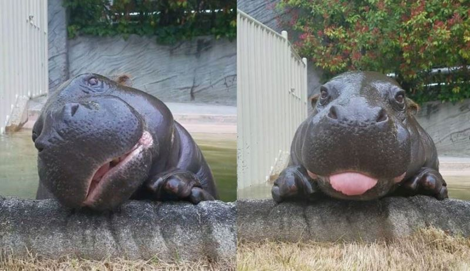
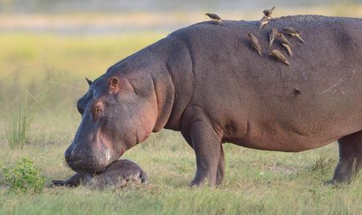
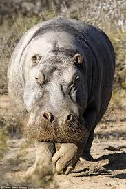

- Tên: Hà mã (danh pháp khoa học: Hippopotamus amphibius) là một loài động vật có vú ăn cỏ lớn sống ở châu Phi cận Sahara, và là một trong hai loài còn tồn tại của họ Hippopotamidae (loài còn lại là hà mã lùn.) Đây là một trong những loài thú có vú trên cạn lớn nhất và là động vật guốc chẵn nặng nhất còn lại, dù thấp hơn nhiều so với loài hươu cao cổ.
- "Hà mã" là âm Hán-Việt của chữ Hán 河馬. Đây là cách dịch nghĩa của từ Hy Lạp ἱπποπόταμος, hippopotamos - gồm ἵππος, hippos nghĩa là "ngựa", và ποταμός, potamos nghĩa là "sông" - mang nghĩa "ngựa sông".[4]
- Giới thiệu: Hà mã là loài sống nửa ở nước nửa trên cạn, cư trú ở các con sông, hồ và các đầm lầy rừng ngập mặn Tây Phi nơi những con đực chiếm lĩnh một đoạn sông và đứng đầu đàn gồm 5 đến 30 con cái và con non. Vào ban ngày, chúng duy trì sự mát mẻ bằng cách đầm mình trong nước hay bùn; và sự sinh sản cũng diễn ra trong nước. Chúng lên bờ vào ban đêm để ăn cỏ. Mặc dù các con hà mã nghỉ ngơi gần nhau trong nước, thì việc kiếm ăn lại là hoạt động đơn lẻ và không mang tính lãnh thổ.
Hình ảnh minh họa


